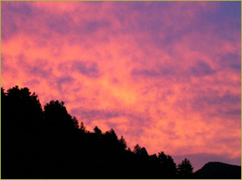
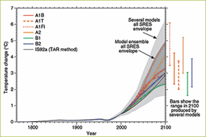
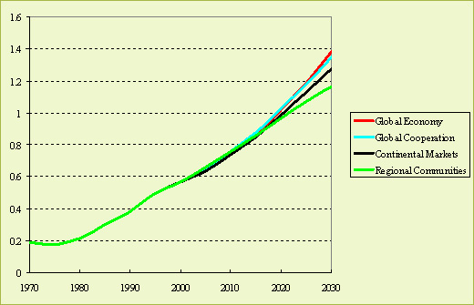
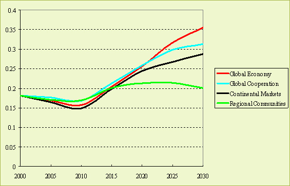
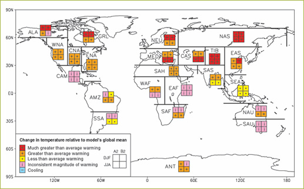

Highlights On the contrary, due to reductions in SO2 emissions that coincide
with climate mitigation policies, the immediate impact is an increase
of the global-mean temperature. |
 |
The impact of climate change on agriculture is small the coming decades, although Southern parts of Europe will experience more problems due to summer droughts compared with Northern parts where the positive effect of CO2 fertilization and the extension of growing season dominates.
Future developments
Climate change is clearly an important driver of future agriculture. The Intergovernmental
Panel on Climate Change concluded in its latest assessment that it is very likely
that humans have caused most of the warming observed over the twentieth century
(IPCC 2007). The report also indicates that future climate change is to be expected,
as a function of continuing and increasing emissions of fossil fuel combustion
products, changes in land use (deforestation, change in agricultural practices),
and other factors (for example, variations in solar radiation). An important
question is what this would mean for agriculture in Europe.
IPCC calculations show in its scenarios (Nakicenovic et al., 2000) that the globally averaged surface air temperature is expected to increase from 1990 to 2100 from 1.4 to 6.4 Celsius (IPCC, 2007) (see also Figure 1). This increase would be without precedent during the last thousand years. The total range given above is partly a consequence of differences in emissions, but also partly an impact of uncertainty in the so-called climate sensitivity, i.e. the relationship between greenhouse gas concentration and the increase in global mean temperate (after equilibrium is reached).

Figure 1: Global mean temperature change under the
different IPCC scenarios based on the uncertainty in emissions and the climate
sensitivity (IPCC, 2001).
In Eururalis, the medium climate sensitivity is used, leading to a medium global
warming until 2030 in the range of the IPCC scenarios (Figure 2; 1.1 –
1.3°C increase compared with pre-industrial levels; until 2000 we are already
committed to a warming of 0.6°C).

Figure 2: Global-mean surface temperature change for
the 4 Eururalis baselines.
High rates of temperature change are most likely to occur in the first half
of the century as result of the fact that even if climate policies are adopted,
their action will also result in lower sulfur emissions. The latter are currently
having a cooling direct effect on the atmosphere. Therefore, climate mitigation
policies will have a warming effect in the near term (less cooling SO2 emissions),
before the warming greenhouse gases like CO2 are reduced (see Figure 3).

Figure 3: Rate of temperature change for the 4 Eururalis
baselines.
The impacts of climate change on agriculture are different per region. In fact, two combined effects have to be accounted for: the impacts of climate change and those of a rising atmospheric CO2 concentration. The latter (also referred to as carbon fertilization) can increase yields and make plants more stress-resistant against warmer temperatures and drought. Climate change can lead to both increases and decreases in yields, depending on the location of changes of temperature and precipitation (climate patterns) and the crop type.
Two regions that are likely to experience large negative impacts of climate change on agricultural production are Asia and Africa (IPCC, 2007). Ironically, the impacts of climate change seem to be small for Europe, although Mediterranean areas are more vulnerable to climate change (due to droughts) than Northern European areas. For the temperate regions climate change is in the beginning (first 1-2 degrees Celsius) mostly a positive factor. Only when climate change will continue to occur, negative impacts on the agricultural sector will dominate. The coming decades climate change does not seem the most important challenge for European farmers, although regional negative impacts cannot be excluded. Current models cannot provide answers on the regional level within Europe.
Policy effects
Obviously, assuming climate policy may lead to lower degrees of warming. Current
insights indicate that the temperature increase associated with climate policy
scenarios currently would decrease the lower bound of the range for the IPCC
scenarios (Figure 1) to about 0.5-1.0 degree Celsius above 1990 level (i.e.
based on an insensitive climate system and using a strong climate policy scenario).
This implies that although these values may be uncertain, climate change is
expected to be very likely. In the Eururalis scenarios we assumed successful
climate mitigation policies in Global Cooperation and to a lesser extent in
Regional Communities, leading to lower energy emissions, compared with Global
Economy and Continental Markets where no climate mitigation policies are assumed.
Due to inertia in the climate system, the differences between scenarios in 2030
are still very small and the most important driver remains economic growth.
Therefore, Regional Communities has the lowest impact until 2030.
Most important drivers
Economic growth and, related, total energy consumption.
Used methodology
The global mean temperature change is simulated by the IMAGE-model (Eickhout
et al., 2002) on the basis of changes in the energy sector and the agricultural
sector. The latter part is provided by LEITAP.
To assess regional impacts, the global-mean temperature change needs to be
downscaled to a gridded level. While the computation of global mean temperature
is uncertain, the patterns of local temperature change are even more uncertain
(Figure 4). In its comparison of temperature calculations from different climate
models, IPCC (2007) noted some areas of agreement (such as temperature increase
likely being higher at higher latitudes than near the equator) but also many
areas of disagreement. Disagreements, for example, typically occur in areas
with complex weather patterns (e.g. the tropics). In Eururalis, the climate
pattern of the Hadley Centre is used, indicating a warming in Europe and an
increasing drought in Mediterranean areas.

Figure 4: Change in temperature relative to global
mean temperature change (IPCC, 2001).